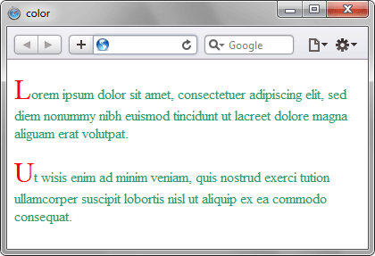

color
Определяет цвет текста элемента.
Краткая информация
| Значение по умолчанию | Зависит от настроек браузера, обычно чёрный цвет |
|---|---|
| Наследуется | Да |
| Применяется | Ко всем элементам |
Синтаксис
color: <цвет> | transparentЗначения
- <цвет>
- См. цвет
- transparent
- Устанавливает прозрачный цвет.
Пример
<!DOCTYPE html>
<html>
<head>
<meta charset="utf-8">
<title>color</title>
<style>
.letter {
color: red; /* Цвет символа */
font-size: 200%; /* Размер шрифта */
}
p {
color: rgb(49, 151, 116); /* Цвет текста */
}
</style>
</head>
<body>
<p><span class="letter">L</span>orem ipsum dolor
sit amet, consectetuer adipiscing elit, sed diem nonummy nibh euismod tincidunt
ut lacreet dolore magna aliguam erat volutpat.</p>
<p><span class="letter">U</span>t wisis enim ad
minim veniam, quis nostrud exerci tution ullamcorper suscipit lobortis nisl
ut aliquip ex ea commodo consequat.</p>
</body>
</html>Результат данного примера показан на рис. 1.

Рис. 1. Использование свойства color
Объектная модель
Объект.style.color
Спецификация
| Спецификация | Статус |
|---|---|
| CSS Transitions | Рабочий проект |
| CSS Color Module Level 3 | Рекомендация |
| CSS Level 2 (Revision 1) | Рекомендация |
| CSS Level 1 | Рекомендация |
Браузеры
| Internet Explorer | Chrome | Opera | Safari | Firefox |
| 3 | 1 | 3.5 | 1 | 1 |
| Android | Firefox Mobile | Opera Mobile | Safari Mobile |
| 1 | 1 | 6 | 1 |